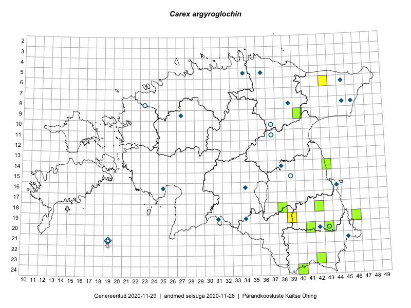

Carex argyroglochin
Uuendatud: 2016-12-02
Kaardile koondatud taksonid: Carex argyroglochin Hornem.

Kaart põhineb 6 kirjel, neist vaatlusi 2 ja eksemplare 4. Taksonit on leitud 5 ruudust.
Viited andmebaasikirjetele